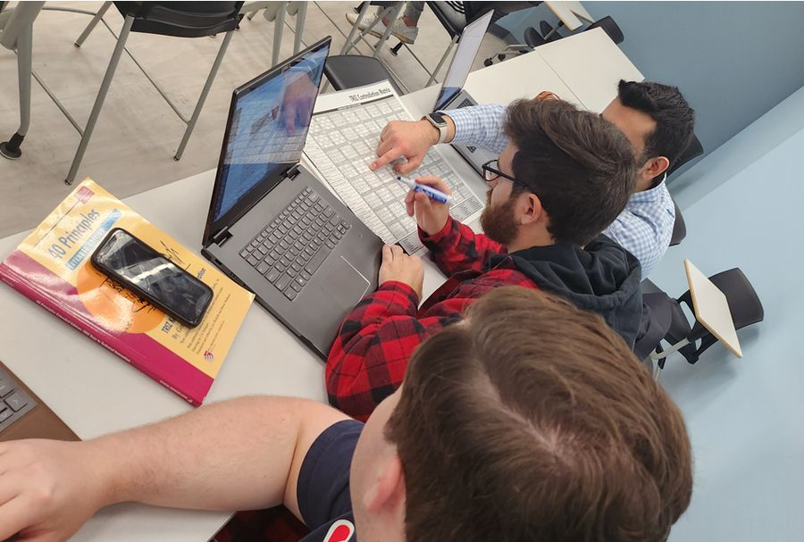
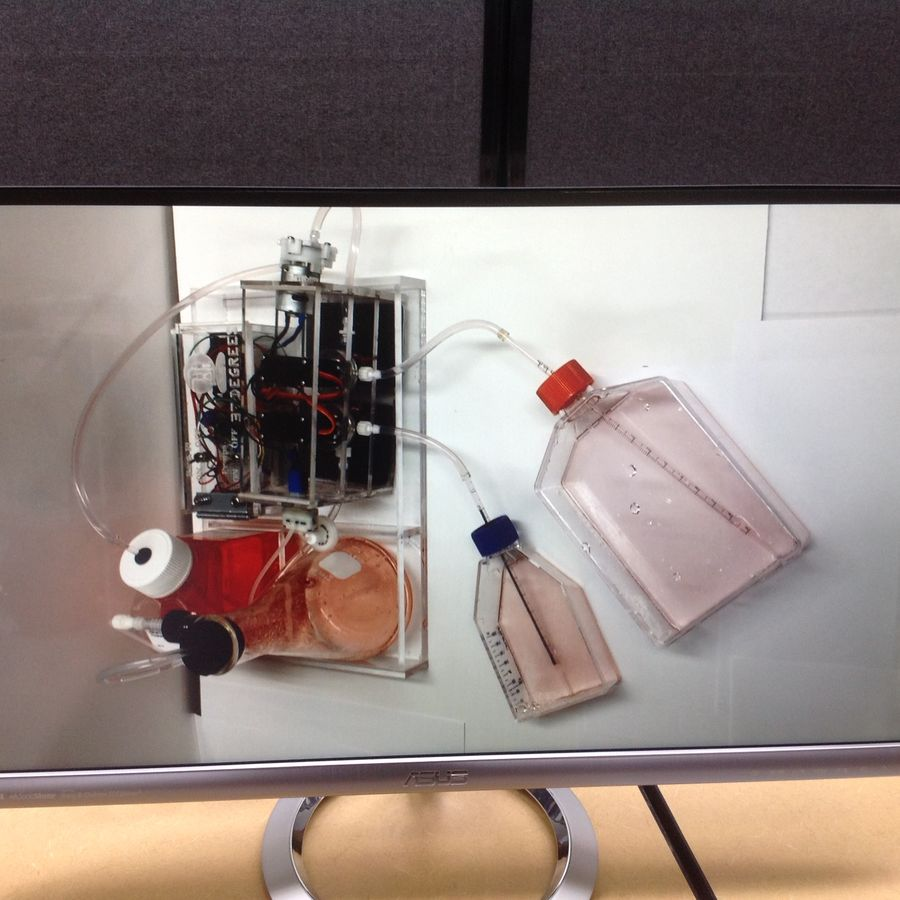

Training schedule
Workshops and courses from TRIZ providers
The Institute promotes TRIZ training from independent providers by listing their workshops. Providers may submit courses for the schedule; the Institute does not run these courses itself.
TOP-TRIZ RCCA Course — Virtual
TOP-TRIZ will help you develop better solutions at a lower cost and in less time. For engineers and project managers searching for root causes and innovative solutions to engineering problems. Zinovy Royzen, TRIZ Consulting, Inc. Fee: $5,000.
Designing & Manufacturing Better Products Faster Using TOP-TRIZ — Online
Covers all TOP-TRIZ problem-solving methods for all classes of engineering problems needing innovative solutions, including the algorithm for resolving conflicts between product or process parameters while minimizing product changes and costs. Zinovy Royzen, TRIZ Consulting, Inc. Fee: $5,000.
Advanced Practice TRIZ Course — Virtual
Helps TRIZ users gain advanced experience in using TRIZ and confidence in solving real-life problems. Fee: $5,000.
TRIZ Practitioner Course — Virtual
Zinovy Royzen, TRIZ Consulting, Inc., Seattle. Fee: $5,000.
Virtual Multi-session TRIZ Workshop — Associate Certification preparation
Technical Innovation Center's TRIZ virtual workshop prepares participants for the Altshuller Institute Associate certification test. Standard fee: $2,500; group discounts available; $500 non-refundable deposit secures a seat.
Listings reflect the live training calendar as of September 2026. Dates and fees are set by each provider; confirm on the provider's site before registering. Full calendar on aitriz.org
University programs
TRIZ in the graduate engineering curriculum
The Altshuller Institute facilitates the training and support of the Bioengineering department at Tulane University, New Orleans. The professors were very excited about the TRIZ training provided and sought practical tools to help their students with bioengineering projects.
"For the 4th year in a row, Tulane University is offering a TRIZ course as part of the Graduate Engineering Curriculum. This year, 12 students spanning 4 engineering disciplines are learning the basics of TRIZ methods. Some will elect to sit for the certification exam to become TRIZ Associates. Graduates of the program typically become industry leaders in research, design, and manufacturing."Prof. Khaled Adjerid, Bioengineering Department Head, Tulane University
In May 2026, five students from this year's class took and passed the official exam, earning their Associate Certification from the Altshuller Institute:
- Maxwell Dunn
- Morgan Lyon
- Mariana Pirela Ramirez
- Marisa Ricci
- Matthew Vuong
If other universities would like to know more about installing a TRIZ course to help their students succeed, just let us know. The Institute is ready to help you achieve your goals.
TRIZ is a foundational methodology for technology innovation and is useful to all who become familiar with its tools and philosophy.


TRIZ Certification
One of the cornerstones of the Altshuller Institute
Certification is a verification that an individual has attained a level of accomplishment and expertise in the TRIZ world. As one of only two international TRIZ certification organizations, the Institute is serious about maintaining a high level of standards and verification to protect the validity of certification and the integrity of the process.
Level 1
Associate
Open-book, multiple-choice test of 6–8 problems covering function analysis, contradictions and the laws of evolution. Up to 4 hours. Fee $150 for annual members ($250 including membership).
Level 2
Practitioner
Requires Associate certification. Open-book test of 10 problems including Su-Field analysis and ARIZ, offered four times a year, up to 8 hours. Fee $400.
Level 3
Specialist
Verifiable evidence of practical application of TRIZ for at least two years, a paper on an advanced topic, and an interview by the Certification Board.
Level 4
Master
Prior certification as Specialist and a demonstrated advancement of TRIZ. A fourth level to be established once the Board agrees how to select and qualify candidates.
Certification of TRIZ was enacted by Genrikh Altshuller at the founding of the Institute. It is administered by the Certification Board — leading experts in TRIZ theory and practice, all TRIZ Masters — nominated by the Education Committee and approved by the Executive Committee. All Institute qualifications are compatible with those conferred by the International TRIZ Association (MATRIZ). Annual or lifetime membership is a prerequisite for every level.
Summary of qualification requirements
What each level requires
| Qualification | Requirement | Evaluation procedure |
|---|---|---|
| TRIZ Associate | Good theoretical knowledge of function analysis, engineering and physical contradictions, the 40 principles and Contradiction Matrix, and the laws of engineering system evolution. Annual or lifetime member. | Open-book, multiple-choice, proctored test of 6–8 problems; up to 4 hours. Graded by Certification Board members; passing grade 75%. Results within fourteen business days. |
| TRIZ Practitioner | Demonstrable command of the major TRIZ concepts and tools listed in the "TRIZ Practitioner Certification". Annual or lifetime member of the Altshuller Institute. | Test, graded by Certification Board members. Scores are averaged; a passing score of 75%+ is required. |
| TRIZ Specialist | Verifiable evidence of practical application of TRIZ for at least two years. Prior certification as AI Practitioner and annual or lifetime member. | Paper on an advanced topic in TRIZ and interview by the Certification Board. |
| TRIZ Master | Prior certification as AI Specialist. Advancement of TRIZ. | To be determined. |
Companies with TRIZ certifications
- Intel
- GE
- Boeing
- Samsung
- Hyundai
- Corning
- Regeneron
- Lam Research
- Entegris
- Denso
- Ericsson
- General Dynamics
- Shell
- Dow
- Thyssenkrupp Materials
- Hamilton Beach
- Owens-Illinois
- and more
Countries with TRIZ certifications
- United States
- South Korea
- Russia
- Israel
- China
- Latvia
- Sweden
- Colombia
- Mexico
- Singapore
- Malaysia
- Canada
- Saudi Arabia
- Iran
- Philippines
- Brazil
- Denmark
Recommended references
- Altshuller, G.S. (1988). Creativity as an Exact Science. Gordon and Breach.
- Altshuller, G.S. (1999). The Innovation Algorithm. Technical Innovation Center.
- Altshuller, G.S. (1995). And Suddenly the Inventor Appeared. Technical Innovation Center.
- Fey, V., Rivin, E. (2005). Innovation on Demand. Cambridge University Press.
- Mann, D. (2002). Hands-on Systematic Innovation. CREAX Press.
- Rantanen, K., Domb, E. (2002). Simplified TRIZ. CRC Press.
- Terninko, J., Zusman, A., Zlotin, B. (1998). Systematic Innovation: An Introduction to TRIZ. CRC Press.
- Royzen, Z. (2008). Designing and Manufacturing Better Products Faster Using TRIZ. TRIZ Consulting.
- Salamatov, Y. (1999). TRIZ: The Right Solution at the Right Time. Insytec.
- Altshuller, G., Zlotin, B., Zusman, A., Philatov, V. (1999). Tools of Classical TRIZ. Ideation International.
Benefits of certification
The link between where you are and where you want to go
Certification assists us in making important connections in a career. We use the credibility of certification to connect with business opportunities. Top-performing companies understand that properly training employees leads to direct, measurable bottom-line benefits.
For individuals
- Confirms mastery of TRIZ concepts, tools and best practices
- Enables better job performance
- Enhances career and promotion opportunities
- Increases recognition by peers, employers and recruiters
- Sets you apart as an expert and leader in your field
For management
- Identifies those with sufficient product development knowledge and experience to move into a leadership position
- Differentiates between hiring candidates — beyond experience, you can assess interest in professional growth and development
For organizations
- Supports the drive for process consistency and discipline in problem solving and innovation
- Offers the right "big picture", baseline and areas of focus
- Several leading companies already sponsor TRIZ certification in their corporations